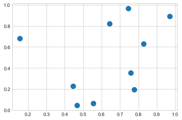
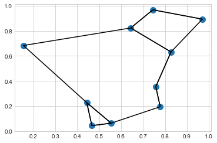

L = [3, 1, 4, 1, 5, 9, 2, 6]
sorted(L) # returns a sorted copy[1, 1, 2, 3, 4, 5, 6, 9]지금까지 우리는 주로 NumPy를 사용하여 배열 데이터에 액세스하고 작업하는 도구에 관심을 가져왔습니다. 이번 장에서는 NumPy 배열의 값 정렬과 관련된 알고리즘을 다룹니다. 이러한 알고리즘은 컴퓨터 과학 입문 과정의 단골 주제입니다. 이 알고리즘을 수강한 적이 있다면 아마도 삽입 정렬, 선택 정렬, 병합 정렬, 빠른 정렬, 버블 정렬 등에 대한 꿈(또는 기질에 따라 악몽)을 나타났을지도 모릅니다. 모두 유사한 작업(목록이나 배열의 값 정렬)을 수행하는 방법입니다.
파이썬(Python)에는 목록 및 기타 반복 가능한(iterable) 객체를 정렬하기 위한 몇 가지 내장 함수와 메서드가 있습니다. sorted 함수는 목록을 받아들이고 목록의 정렬된 결과를 반환합니다.
L = [3, 1, 4, 1, 5, 9, 2, 6]
sorted(L) # returns a sorted copy[1, 1, 2, 3, 4, 5, 6, 9]이와 달리 목록의 sort 메소드는 목록을 직접 정렬합니다.
L.sort() # acts in-place and returns None
print(L)[1, 1, 2, 3, 4, 5, 6, 9]파이썬(Python)의 정렬 방법은 매우 유연하며 모든 반복 가능한(iterable) 객체를 처리합니다. 예를 들어 여기서는 문자열을 정렬합니다.
sorted("python")['h', 'n', 'o', 'p', 't', 'y']이러한 기본 제공 정렬 방법은 편리하지만 이전에 논의한 것처럼 파이썬(Python) 값의 유연성은 균일한 숫자 배열을 위해 특별히 설계된 루틴보다 속도가 상대적으로 느릴 수 있음을 의미합니다. 여기서 NumPy의 정렬 루틴이 사용됩니다.
np.sort 함수는 파이썬(Python)의 내장 sorted 함수와 유사하며 배열의 정렬된 결과를 효율적으로 반환합니다.
import numpy as np
x = np.array([2, 1, 4, 3, 5])
np.sort(x)array([1, 2, 3, 4, 5])파이썬(Python) 목록의 sort 메서드와 마찬가지로 배열 sort 메서드를 사용하여 배열을 직접 정렬합니다.
x.sort()
print(x)[1 2 3 4 5]이와 관련된 함수로 ’argsort’이며, 대신 정렬된 요소의 인덱스를 반환합니다.
x = np.array([2, 1, 4, 3, 5])
i = np.argsort(x)
print(i)[1 0 3 2 4]이 결과의 첫 번째 요소는 가장 작은 요소의 인덱스를 알려주며, 두 번째 값은 두 번째로 작은 요소의 인덱스를 순서입니다. 원하는 경우 이러한 인덱스를 사용하여(멋진 인덱싱을 통해) 정렬된 배열을 구성합니다.
x[i]array([1, 2, 3, 4, 5])이 장의 뒷부분에서 argsort의 적용을 보게 될 것입니다.
NumPy 정렬 알고리즘의 강점 중 하나는 axis 인수를 사용하여 다차원 배열의 특정 행이나 열을 따라 정렬하는 기능입니다. 예를 들어:
rng = np.random.default_rng(seed=42)
X = rng.integers(0, 10, (4, 6))
print(X)[[0 7 6 4 4 8]
[0 6 2 0 5 9]
[7 7 7 7 5 1]
[8 4 5 3 1 9]]# sort each column of X
np.sort(X, axis=0)array([[0, 4, 2, 0, 1, 1],
[0, 6, 5, 3, 4, 8],
[7, 7, 6, 4, 5, 9],
[8, 7, 7, 7, 5, 9]])# sort each row of X
np.sort(X, axis=1)array([[0, 4, 4, 6, 7, 8],
[0, 0, 2, 5, 6, 9],
[1, 5, 7, 7, 7, 7],
[1, 3, 4, 5, 8, 9]])이렇게 하면 각 행이나 열이 독립적인 배열로 처리되며 행이나 열 값 사이의 모든 관계가 손실된다는 점을 명심하세요!
때로는 전체 배열을 정렬하는 데 관심이 없을 때도 있습니다. 그저 배열에서 k개의 가장 작은 값을 찾고 싶을 때도 있습니다. NumPy는 np.partition 기능을 사용하여 이를 지원합니다. np.partition은 배열과 숫자 K를 취합니다. 결과는 파티션 왼쪽에 가장 작은 K 값이 있고 오른쪽에 나머지 값이 있는 새 배열입니다.
x = np.array([7, 2, 3, 1, 6, 5, 4])
np.partition(x, 3)array([2, 1, 3, 4, 6, 5, 7])결과 배열의 처음 세 값은 배열에서 가장 작은 세 값이고 나머지 배열 위치에는 나머지 값이 배치됩니다. 두 파티션 내에서 요소의 순서는 정해져 있지 않습니다.
정렬과 마찬가지로 다차원 배열의 임의의 축을 따라 분할합니다.
np.partition(X, 2, axis=1)array([[0, 4, 4, 7, 6, 8],
[0, 0, 2, 6, 5, 9],
[1, 5, 7, 7, 7, 7],
[1, 3, 4, 5, 8, 9]])결과는 각 행의 처음 두 슬롯에 해당 행의 가장 작은 값이 포함되고 나머지 값이 나머지 자리에 놓이는 배열입니다.
마지막으로, 정렬 인덱스를 계산하는 np.argsort 함수가 있는 것처럼 파티션의 인덱스를 계산하는 np.argpartition 함수가 있습니다. 다음 섹션에서는 이 두 가지가 모두 활용 사례를 살펴보겠습니다.
집합에 있는 각 점의 가장 가까운 이웃을 찾기 위해 여러 축을 따라 argsort 함수를 사용할 수 있는 방법을 간략히 살펴보겠습니다. 2차원 평면에 임의의 10개 점 집합을 만드는 것부터 시작하겠습니다. 표준 규칙을 사용하여 이를 \(10\times 2\) 배열로 배열합니다.
X = rng.random((10, 2))이러한 점이 분포를 확인하기 위해 빠른 산점도를 생성해 보겠습니다(다음 그림 참조).
%matplotlib inline
import matplotlib.pyplot as plt
plt.style.use("seaborn-whitegrid")
plt.scatter(X[:, 0], X[:, 1], s=100);
이제 각 점 쌍 사이의 거리를 계산해 보겠습니다. 두 점 사이의 거리 제곱은 각 차원의 차이 제곱의 합이라는 점을 기억하세요. NumPy에서 제공하는 효율적인 브로드캐스팅(배열에 대한 계산: 브로드캐스팅) 및 집계(Aggregations: Min, Max, and Everything In Between) 루틴을 사용하여 한 줄의 코드로 제곱 거리의 행렬을 계산합니다.
dist_sq = np.sum((X[:, np.newaxis] - X[np.newaxis, :]) ** 2, axis=-1)이 작업에는 많은 내용이 담고 있어 NumPy의 브로드캐스팅 규칙에 익숙하지 않은 경우 약간 혼란스러울 수 있습니다. 이와 같은 코드를 발견하면 구성 요소 단계로 나누어 생각하면 좋습니다.
# for each pair of points, compute differences in their coordinates
differences = X[:, np.newaxis] - X[np.newaxis, :]
differences.shape(10, 10, 2)# square the coordinate differences
sq_differences = differences**2
sq_differences.shape(10, 10, 2)# sum the coordinate differences to get the squared distance
dist_sq = sq_differences.sum(-1)
dist_sq.shape(10, 10)논리를 빠르게 확인하려면 이 행렬의 대각선(즉, 각 점과 그 자체 사이의 거리 집합)이 모두 0이라는 것을 알 수 있습니다.
dist_sq.diagonal()array([0., 0., 0., 0., 0., 0., 0., 0., 0., 0.])쌍별 제곱 거리가 구해지면 이제 ’np.argsort’를 사용하여 각 행을 정렬할 수 있으며, 맨 왼쪽 열은 가장 가까운 이웃의 인덱스를 제공합니다.
nearest = np.argsort(dist_sq, axis=1)
print(nearest)[[0 9 3 5 4 8 1 6 2 7]
[1 7 2 6 4 8 3 0 9 5]
[2 7 1 6 4 3 8 0 9 5]
[3 0 4 5 9 6 1 2 8 7]
[4 6 3 1 2 7 0 5 9 8]
[5 9 3 0 4 6 8 1 2 7]
[6 4 2 1 7 3 0 5 9 8]
[7 2 1 6 4 3 8 0 9 5]
[8 0 1 9 3 4 7 2 6 5]
[9 0 5 3 4 8 6 1 2 7]]첫 번째 열에는 0부터 9까지의 숫자가 순서대로 표시됩니다. 이는 우리가 예상한 대로 각 점의 가장 가까운 이웃이 그 자체라는 사실 때문입니다.
여기에서 전체 정렬을 사용함으로써 실제로 이 경우에 필요한 것보다 더 많은 작업을 한 셈입니다. 가장 가까운 \(k\) 이웃에만 충분하다면 가장 작은 \(k + 1\) 제곱 거리가 먼저 오도록 각 행을 분할하고 더 큰 거리가 배열의 나머지 위치를 채우도록 하기만 하면 됩니다. np.argpartition 함수를 사용하면 이 작업을 수행합니다.
K = 2
nearest_partition = np.argpartition(dist_sq, K + 1, axis=1)이 이웃 네트워크를 시각화하기 위해 각 점에서 가장 가까운 두 이웃까지의 연결을 연결한 선과 함께 점을 빠르게 플로팅해 보겠습니다(다음 그림 참조).
plt.scatter(X[:, 0], X[:, 1], s=100)
# draw lines from each point to its two nearest neighbors
K = 2
for i in range(X.shape[0]):
for j in nearest_partition[i, : K + 1]:
# plot a line from X[i] to X[j]
# use some zip magic to make it happen:
plt.plot(*zip(X[j], X[i]), color="black")
플롯의 각 점에는 가장 가까운 두 이웃에 선이 그려져 있습니다. 언뜻 보면 일부 점에서 두 개 이상의 선이 나오는 것이 의아합니다. 이는 점 A가 점 B의 가장 가까운 이웃 두 개 중 하나인 경우 이것이 반드시 점 B가 점 A의 두 가장 가까운 이웃 중 하나임을 의미하지 않기 때문입니다.
이 접근 방식의 브로드캐스팅 및 행별 정렬은 루프를 작성하는 것보다 덜 간단해 보일 수 있지만 파이썬(Python)에서 이 데이터를 작업하는 데 매우 효율적인 방식입니다. 데이터를 수동으로 반복하고 각 이웃 집합을 개별적으로 정렬하여 동일한 유형의 작업을 수행하고 싶을 수도 있지만 이렇게 하면 우리가 사용한 벡터화된 버전보다 알고리즘이 느려지는 것이 자명합니다. 이 접근 방식의 장점은 입력 데이터의 크기에 상관없이 적용된다는 점입니다. 즉, 모든 차원에서 100개 또는 1,000,000개 포인트 사이의 이웃을 쉽게 계산할 수 있으며 코드는 동일하게 보입니다.
마지막으로, 매우 큰 규모의 최근접 이웃 검색을 수행할 때 무차별 알고리즘의 \(\mathcal{O}[N^2]\)보다는 \(\mathcal{O}[N\log N]\) 또는 그 이상으로 확장할 수 있는 트리 기반 및/또는 근사 알고리즘이 있다는 점에 유의하겠습니다. 이에 대한 한 가지 예는 Scikit-Learn에서 구현된 KD-Tree입니다.